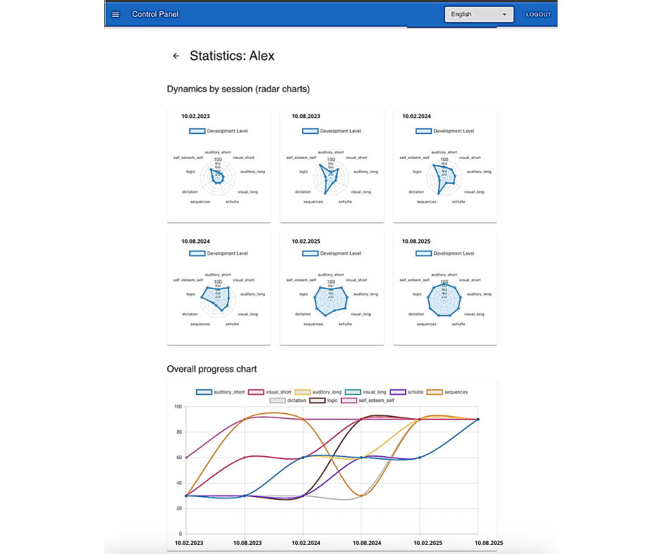

SaaS-платформа для оцифровки и визуализации когнитивного развития детей. Получите ранний доступ к пилотной версии и помогите сформировать будущее доказательного образования.
Зарегистрироваться в листе ожиданияВ современном образовании зачастую сложно увидеть полную картину развития ребенка. Традиционные методы оценки не всегда отражают реальный когнитивный рост.
Трудно отследить динамику развития когнитивных функций (внимание, память, мышление). Родители и педагоги видят только итоговые баллы, а не путь к ним.
Оценка часто зависит от личного восприятия педагога, что снижает объективность и возможность сравнения результатов.
Сложно адаптировать программу под индивидуальные потребности каждого ребенка, не имея четких данных о его сильных и слабых сторонах.
Мы создали платформу, которая превращает сложные данные о когнитивном развитии в понятные и наглядные графики. Теперь вы можете видеть, измерять и эффективно влиять на прогресс каждого ребенка.
Посмотрите короткое видео, чтобы узнать, как наша платформа помогает оцифровывать и визуализировать когнитивный прогресс детей, делая процесс обучения прозрачным и эффективным.
В этом видео вы увидите:
Educatimo Neuro предлагает комплекс инструментов для всестороннего анализа и поддержки когнитивного развития каждого ребенка.
Легко вносите и храните данные о развитии внимания, памяти, мышления и других когнитивных функций. Забудьте о бумажных отчетах и рутинных таблицах.
Наблюдайте за динамикой развития ребенка с помощью интерактивных графиков и диаграмм. Мгновенно выявляйте сильные стороны и зоны для улучшения.
На основе собранных данных платформа генерирует индивидуальные рекомендации для развития конкретных когнитивных навыков, помогая педагогам создавать более эффективные программы.
Все данные собираются и анализируются по единым стандартам, обеспечивая максимальную объективность. Делитесь понятными отчетами с родителями, подтверждая их уверенность в вашей работе.
Наша платформа — идеальный инструмент для тех, кто стремится к инновациям и доказательной базе в образовании.
Привлекайте больше клиентов, демонстрируя измеримые результаты развития их детей. Укрепите свой бренд как центр, использующий передовые, научно обоснованные методы.
Интегрируйте глубокий анализ когнитивных функций в учебный процесс. Помогайте ученикам раскрывать свой потенциал и повышайте академическую успеваемость всего учреждения.
Получите мощный инструмент для персонализации обучения. Создавайте индивидуальные программы развития, опираясь на точные данные о каждом ученике.
Углубите свою диагностику и отслеживание терапии. Визуализируйте изменения в когнитивных функциях, подтверждая эффективность вашей работы.
Станьте одним из первых, кто получит доступ к Educatimo Neuro. Присоединяйтесь к пилотной программе, чтобы протестировать платформу бесплатно и помочь сформировать ее развитие.